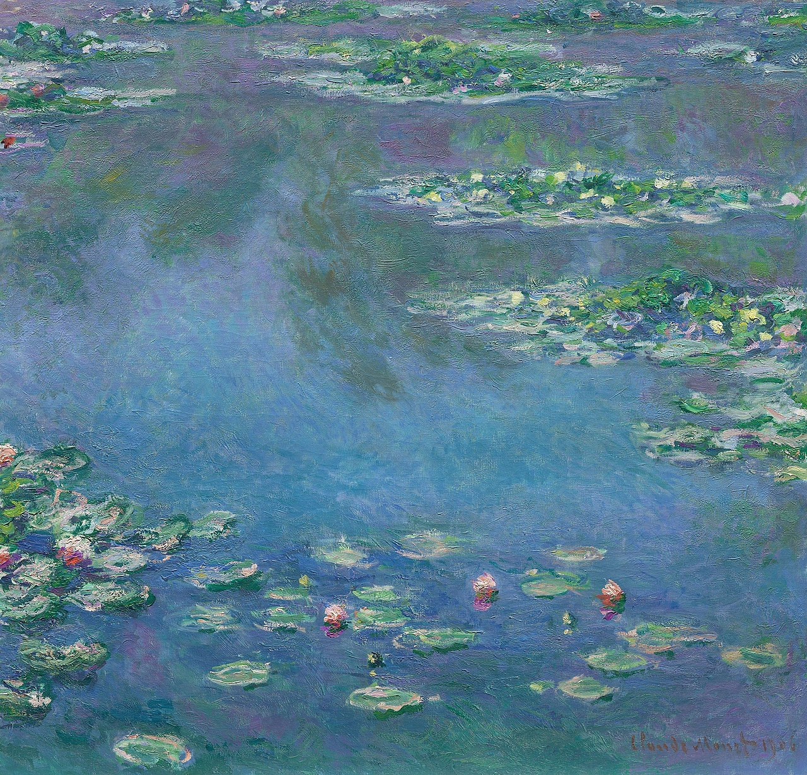

The Arrangement Feels
On Michael Pollan's A World Appears and the dissolution of the hard problem of consciousness
University of Applied Sciences, Bern
A response to Michael Pollan, A World Appears: A Journey into Consciousness (Penguin Press, 2026)
Michael Pollan ends his new book on consciousness in a cave. He has spent several years visiting laboratories, interviewing neuroscientists, philosophers, and plant biologists, ingesting psychedelics, wearing a beeper that interrupts his thoughts at random intervals, and sitting in meditation. He has encountered more than two dozen competing theories of consciousness and found none of them satisfactory. He concludes that consciousness remains a miracle and a mystery — that we may simply lack the right kind of mind to solve it.
We think the cave is the wrong place to end. Not because the mystery isn't real, but because the problem has been malformed from the beginning. The hard problem of consciousness is not an unanswerable question. It is a wrong question. And once you see why it is a wrong question, something unexpected happens: the problem dissolves and the magic remains.
1. Mr. Sammis and his four dollars
Pollan opens with a memory of his eighth-grade chemistry teacher, a committed materialist who informed his class on the first day that a human being consists of a handful of elements — mostly water, carbon, and nitrogen — purchasable from a chemical supply company for approximately four dollars. The implicit message: this is what you are. Pollan was astounded, he tells us, mainly at what an idiot this man was.
Mr. Sammis was not wrong. He was a good teacher. His provocation was so effective that Pollan is still thinking about it decades later. The four dollars of chemicals are real. The description is accurate. The limitation was not in the teacher but in the teenage student who heard “this is what you are made of” and concluded “this is all you are” — who mistook a level of description for the only level of description. That mistake, it turns out, is the hard problem of consciousness.
2. The Nymphéas

Consider the Nymphéas — Monet's great water lily paintings. Described at the molecular level, a Nymphéas is a particular arrangement of pigment molecules on canvas. This description is accurate and complete at that level. But described at the level of visual organisation, it is fields of colour and light. Described at the level of aesthetic experience, it is water lilies at dusk, shimmering and dissolving, that could move you to tears.
None of these descriptions is false. None of them is produced by the others. They are the same reality described from different angles, each angle revealing properties invisible from the others. The aesthetic experience is not generated by the pigments, does not emerge from the pigments, does not supervene mysteriously on the pigments. In front of that arrangement of pigments, aesthetic experience happens — when described at the level at which visual experience and meaning for the observer become the salient features.
Mr. Sammis as an art dealer would have us buy the Nymphéas by the weight.
The teenage Pollan, like many of us, heard Mr. Sammis and thought: if this is what we are made of, then either consciousness is an illusion or something magical must be added to the chemicals. Neither conclusion follows. The right conclusion is: pivot. The same chemicals, described from a different angle, are something the chemical supply catalogue has no entry for. Conway will help us understand.
3. The glider
In Conway's Game of Life — a simple mathematical universe of cells that are either on or off, governed by four rules — certain patterns of cells do something remarkable. They move. A configuration of five cells, arranged just so, translates diagonally across the grid, maintaining its shape as it goes. It is called a glider.
In that arrangement of cells, gliding happens — and it is visible only at the level of description where the pattern, rather than the individual cell, is the salient feature. We would not ask: why does this arrangement of cells give rise to gliding? The question doesn't arise. The arrangement glides. There is no production step between the cells and the gliding. No mysterious bridge is needed. No extra ingredient is required. In that arrangement, gliding happens.
Now: if you arrange cells in a certain way, that arrangement glides. If you arrange matter in a certain way, that arrangement feels. If you arrange matter in a more complex way still, that arrangement feels it is feeling.
We did not say: that arrangement produces feeling, or gives rise to feeling, or generates feeling. We said: that arrangement feels. In that arrangement, feeling happens. Feeling is what occurs in that arrangement, at the level at which the system's active engagement with its world becomes the salient feature. And awareness — consciousness — is what happens in a subset of more complexly arranged matter, when it represents not just its world but its own representing of that world.
To be more precise: for the glider to glide, it requires not just structure but process and energy. The rules must apply, the simulation must run, time must pass. Remove any one and the glider freezes. The same is true of feeling. Structure alone is not enough. The system must be running, actively engaging with its environment, maintaining itself, closing the loop between perception and action. A frozen brain has the structure but not the process. A footprint in sand has structure, process, and energy, but no self-maintaining boundary — the sand does not represent the foot, the impression serves nothing. Even the fossilised footprint, which has outlasted the process and energy that created it, retains only structure — readable by us, meaningful to us, but representing nothing for itself. It has encoded information about a creature in which feeling once happened but nothing more.
The sand remembers but does not recall.The arrangement feels. When it is alive to its world.
The hard problem — why do physical processes give rise to experience? — encodes a production arrow between body and mind. But the physical and the phenomenal are not two items requiring a bridge. They are concentric circles: the outermost is physical reality, the middle is phenomenality (systems that actively represent their world), the innermost is consciousness (systems that represent their own representing). The arrow has no referent. Not because one of its relata is illusory, but because the relation it names was never the right relation to look for.
There is no bridge to build. There is no extra ingredient. There is no production step.
4. Three circles
Building on this: reality, we suggest, admits of description at three nested levels — nested not as layers in a cake but encapsulated one into the other, as concentric circles.
The outermost circle is physical reality — matter, energy, spacetime, the domain of physics. Everything that exists is here. At this level of description there are particles and waves, forces and fields, but no redness, no pain, no smell of coffee. Not because something is missing, but because these are not properties that appear at this grain of description. Mr. Sammis lived here, and argued there was nowhere else to live. So, in a different way, did Mr. Chalmers.
Within physical reality, a smaller circle: phenomenality. Not every physical system actively represents its world. Rocks do not. Stars do not. But some physical systems, those that partition their environment into what matters and what doesn't, that navigate rather than merely exist, that maintain an active, ongoing representation of their surroundings in the service of their own activity, are also phenomenal systems. These systems are contained within physical reality; they are physical through and through. But when described from within their organisational boundary, at the level at which their active engagement with the world becomes the salient feature, something appears that was invisible at the finer grain: redness, pain, the smell of coffee. Not as additions to physical reality. As what physical reality is, at this level. Much as the gliders glide, these beings feel.
Within phenomenality, a smaller circle still: consciousness. Not every phenomenal system represents its own representing. A honeybee navigating by landmark, a fish tracking prey, possibly an octopus solving a novel problem, these systems may have rich phenomenal worlds without being able to take those worlds as objects of reflection. But some systems do. They not only feel. They feel they are feeling. They can reflect on their own experience, examine it, wonder about it. This is the level of the self, of metacognition, of the peculiar habit of asking what it is like to be oneself — the habit that generates philosophy of mind, and with it, the hard problem.
Three nested levels. One reality. Every conscious system is phenomenal. Every phenomenal system is physical. The circles do not float free of each other. But the descriptions are not interchangeable, the properties visible at each level are not visible at the others, and no level produces the next.
5. The spandrel question
In 1979, the evolutionary biologists Stephen Jay Gould and Richard Lewontin published a celebrated critique of what they called the adaptationist programme — the habit of decomposing organisms into discrete traits and then demanding a selective story for each one. Their example was the spandrels of the Basilica di San Marco in Venice — the roughly triangular spaces formed where arched vaults meet atop supporting columns, decorated with mosaics so perfectly suited to their frames that a visitor might assume they were designed to house the artwork. In fact, spandrels are structural byproducts. Mount a dome on four arches and spandrels appear. The error is not in admiring the mosaics. The error is in asking what selective pressure produced the spandrel — when the spandrel was never a distinct unit of design requiring its own explanation.
The hard problem of consciousness is a spandrel question. It arises not from the structure of the world but from a particular way of decomposing the world for analysis. Atomise reality into a physical domain and a phenomenal domain, treat each as an independently characterised item standing on opposite sides of a relation, and then demand a production story connecting them — and the hard problem is guaranteed. No account of neural mechanisms, no theory of information integration, no story about global workspaces or quantum coherence will ever close the gap, because the gap is an artefact of the decomposition, not a feature of reality.
David Chalmers formulated the hard problem with admirable precision in 1994: why and how do physical processes give rise to conscious experience? The phrase “give rise to” encodes a production arrow — physical processes on one side, conscious experience on the other, a bridge needed between them. Every major position in the philosophy of mind for the past thirty years has accepted this architecture and disagreed only about the bridge. Illusionism, functionalism, property dualism, Russellian monism, panpsychism — each accepts that there are two relata requiring a relation, and each offers a different account of the relation. None has questioned whether the two-relata structure is warranted.
We question it. The physical and the phenomenal are not two items requiring a bridge. They are two levels of description of one reality — we identify three. The production arrow has no referent. Not because one of its relata is illusory, but because the relation it names was never the right relation to look for.
6. What remains
None of this means consciousness is simple or that the science of mind is finished. The dissolution of a misguided question does not dissolve the genuine questions. It replaces them with better ones.
If feeling happens in certain arrangements, and if awareness of that feeling happens in a subset of these, the questions become: what kind of arrangement? What distinguishes a system in which feeling happens from one that merely processes information? What is the threshold at which a physical system becomes phenomenal? These are difficult questions. They are open to neuroscience, to computational modelling, to philosophy of biology, to the comparative study of animal cognition. They are hard in the way that good scientific questions are hard, resistant to easy answers but not to principled inquiry. They are not hard in the way the hard problem was hard, generating the sense of permanent, in-principle intractability that led Pollan to his cave.
Chalmers asked something that looked like a question. Thirty years of brilliant philosophy has been expended trying to answer it. We are suggesting that the asking was itself the error.
The cave is a beautiful ending to a fascinating book. But it is the ending of someone who accepted the question as posed, who kept looking for a bridge between the physical and the phenomenal because he assumed a bridge was needed. If you refuse the question, if you see that the arrangement feels rather than that the arrangement produces feeling, and that awareness is but feeling turned upon itself, you do not end in a cave.
You end, perhaps, where we stand. Not confused and frustrated, but joyful at the tears that come when we think of the water lilies.
The miracle is intact. The mystery has been relocated. What vanishes is only the confusion.